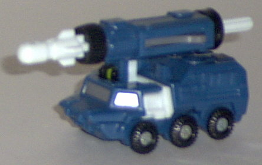
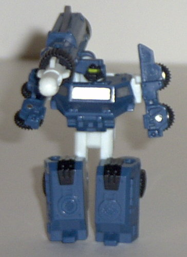
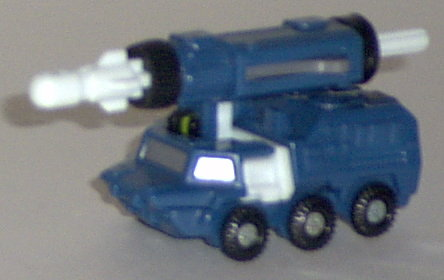
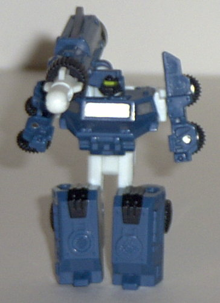
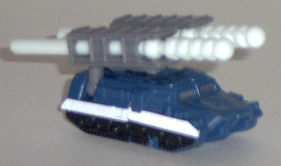
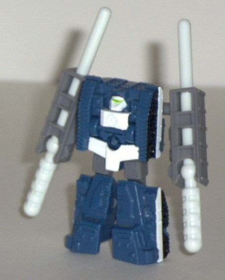
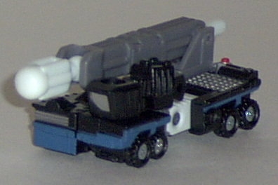
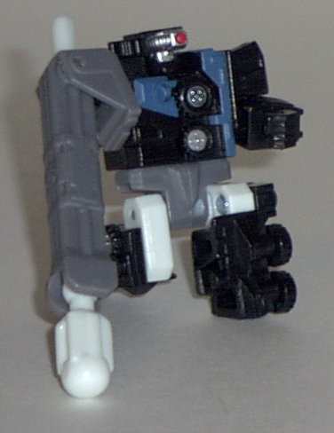

Broadside
Broadside
 
Difficulty of Transformation : Very Easy
Color Scheme : Dark dull navy blue, day-glo white, black, and some gunmetal silver, gray, and dull greenish-yellow
Individual Rating : 6.6
Night
Attack Team
Allegiance
: Minicon
Size
: Mini-Con (3-pack)
Team Gimmick
: Ability to each fire
a projectile
Overall Rating
: 6.6
(NOTE: Because this set is a repaint, this
is not a full-blown review. This mainly covers any changes made to the
mold and the color scheme, and merely compares it the Land Military Team.
For a review on the mold itself, read the review of the Land Military Team
here
.)
Broadside


Difficulty of Transformation
: Very
Easy
Color Scheme
: Dark dull navy blue,
day-glo white, black, and some gunmetal silver, gray, and dull greenish-yellow
Individual Rating
: 6.6
Broadside's color scheme
is a slight improvement over his predecessor Knock-Out's, and it's mainly
because the white, dark blue, and black fit together a little better than
the red and muddy brown did (although the latter is certainly not bad).
The white, black, and dark blue give a very "undead" look to Broadside
here, and his yellow visor looks positively eeevil in his robot mode. Like
on the other Night Attack members, though, the day-glo white is... well,
day-glo.
No mold changes have
been made to Broadside.
Fetch


Difficulty of Transformation:
Very
Easy
Color Scheme
: Dark dull navy blue,
day-glo white, black, and some gunmetal silver, gray, and bright lime green
Individual Rating
: 6.4
It's funny... even though
Fetch's (teeheehee) color scheme is practically the same as Broadside's,
Fetch (teeheehee) scores a lower rating than his predecessor Wreckage.
Mainly it's because the main portion of his vehicle mode doesn't have as
much of a color variance as I'd like, what with the hood being devoid of
any paint detailing at all. In robot mode, the day-glo white and dark dull
navy blue just don't go together with so little black and gray to complement
them as well. Plus, it looks like Fetch (teeheehee) is wearing briefs.
Oookay...
No mold changes have
been made to Fetch (teeheehee).
Scattor


Difficulty of Transformation
: Easy
Color Scheme
: Black, day-glo white,
gray, silver, and some bright red and dark dull navy blue
Individual Rating
: 6.9
Scattor isn't really
all that different from his predecessor Bonecrusher except for his accents.
He's still mainly black- it's just that his blue-gray parts are not gray,
and his red parts are not day-glo white, and he has different-colored paint
apps. As such, it's hard for me to identify him as a different character
and not just an "undead" Bonecrusher. Both color schemes also rate pretty
much the same to me- although I suppose I like Bonecrusher's ever-so-slightly
better because gold looks a bit better on black then silver does, in my
opinion.
No mold changes have
been made to Scattor.
The Night Attack Team is, I think, a mixed bag. Broadside's better than his predecessor, Fetch (teeheehee) is worse, and Scattor is about the same. Basically, if you only want to buy one, I suggest this: If you like unified Minicon team color schemes more, go with the Night Attack Team. Otherwise, go with the Land Military Team instead.
No Stats
Review by Beastbot